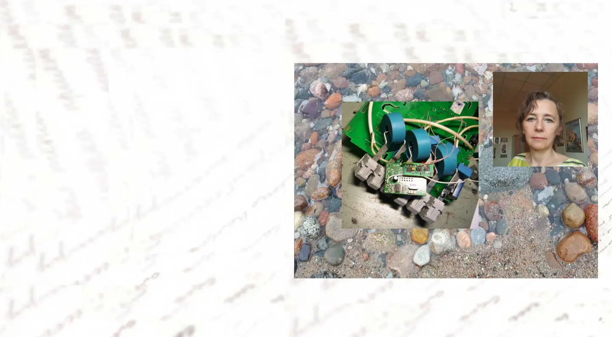

Электроэнергетика
Пример работы юриста
Безучетное потребление электроэнергии
Наша защита клиента от необоснованного начисления безучётного потребления электроэнергии (дело № А76-35898/2023)

Как вы думаете, легко ли в суде доказать факт отсутствия безучетного потребления электроэнергии?
Например, сетевая организация неожиданно заявляет, что у Вас возникла задолженность несколько миллионов рублей, так как в Вашем приборе учета эксперты нашли неизвестную электронную плату.
Ситуация, к сожалению, типичная.
Два представителя сетевой организации пришли на плановую проверку прибора учёта (счетчика). Большинство потребителей относятся к таким визитам сетевой организации доверчиво. Визиты были не один раз и всегда заканчивалось хорошо. Поэтому потребители формально: предоставляют проверяющим доступ к помещению, где установлен прибор учёта, передают необходимые документы и либо уходят, либо продолжают свои дела, но не контролируют, не фиксируют происходящее.
Предприниматели часто не учитывают, что в сетевых организациях действует система премирования за выявление «недобросовестных» потребителей, а некоторые проверяющие могут игнорировать требования добросовестности. Между тем доверчивость потребителя может обернуться сорванной или поврежденной пломбой, неправильным измерением прибора учёта, а затем миллионными суммами начислений за безучётное потребление электроэнергии, стоимость которой рассчитывается сетевой организацией исходя из максимальной мощности за шесть предыдущих месяцев.
Недавний случай такой же ситуации, которая произошла у нашего клиента.
В ходе плановой проверки проверяющие заявили о выявленной погрешности измерений прибора учёта потребителя почти на 29 % и изъяли прибор учёта для исследования в заводе-изготовителе. При этом, полагая уже установленным факт безучетного потребления, сетевая организация направила в правоохранительные органы заявление. Здесь индивидуальный предприниматель дала пояснения, что никаких действий с прибором учета не совершала, что все пломбы были сохранены.
Мы был привлечены уже после того, как было проведено исследование прибора учета в заводе-изготовителе, установившего факт несанкционированного вмешательства и наличие электронной платы в конструкции счетчика. Этими выводами был обоснован акт неучётного потребления и счёт на оплату безучётного потребления на сумму свыше 2 млн руб. Эти документы предприниматель получила для их оплаты.
Следовательно, документальная база по проверке была сформирована до нашего участия.
Вот такое дело было передано нам.
Первый вопрос юристам. Какие бы Вы предприняли действия для восстановления прав ответчика?

Решение поставленной задачи мы разбили на 2 этапа:
К счастью, при подписании акта безучётного потребления потребитель указала своё несогласие с результатами проверки прибора учёта — это обстоятельство имеет существенное значение для судебной оценки.
В таких условиях перед нами стояла задача посредством анализа документов сетевой организации и применения технических знаний в электроэнергетике установить незаконность процедуры проверки, нарушения при исследовании счётчика и дефекты в актах, составленных сетевой организацией и гарантирующим поставщиком.
Первым этапом была подготовлена претензия, в которой мы указали выявленные нарушения: отсутствие уведомления о времени и месте исследования в заводе-изготовителе, невозможность участия потребителя в исследовании, непредоставление акта исследования, а также отсутствие фото- и видеоматериалов.
Претензия, как и ожидалось, осталась без ответа. Вскоре Гарантирующий поставщик ООО «Уралэнергосбыт» направил потребителю собственную претензию, которая по нашей рекомендации не была удовлетворена. После этого ООО «Уралэнергосбыт» обратилось в Арбитражный суд Челябинской области с иском. От имени потребителя мы подали встречный иск о признании акта безучётного потребления недействительным.
В ходе судебного разбирательства была проведена значительная работа по установлению допущенных проверяющими ошибок на всех этапах проверки.
Нарушения при плановой проверке.
Установлено, что измерения были выполнены приборами, не соответствующими классу точности счётчика «Меркурий 230». Проверяющие провели лишь одно измерение погрешности, тогда как их количество должно быть больше одного.
Отсутствие надлежащего уведомления о внесудебном исследовании.
Направленный потребителю документ не соответствовал форме юридически значимого уведомления. Более того, в нём предлагалось самостоятельно обращаться в завод-изготовитель за информацией о дате и месте исследования. Уведомление также было направлено несвоевременно.
Несоответствие упаковки счётчика.
Выявлены расхождения между упаковкой, в которой прибор был упакован при демонтаже 22.12.2022, и упаковкой, представленной 30.12.2022 в заводе-изготовителе. Отличались и номера знаков визуального контроля.
Несанкционированный доступ к прибору учета (счетчику).
Установлено, что 29.12.2022 к счётчику имелся доступ до даты его официального исследования 30.12.2022. Заводская комиссия изучала уже вскрытый прибор, на котором были сорваны контрольные знаки. В такой ситуации потребитель не может нести ответственность за выявленные нарушения конструкции.
Судебная экспертиза.
Эксперты исследовали повреждённый объект, поскольку счётчик более года хранился у сетевой организации во вскрытом и не опломбированном состоянии. В результате суд обоснованно не принял выводы экспертизы в качестве доказательства погрешности и безучётного потребления.

Второй вопрос юристам. Что предложите делать дальше?
Второй этап
Анализ показаний спорного и подменного счётчиков.
Погрешность оказалась минимальной и не подтверждала безучётное потребление.
По итогам рассмотрения дела суд первой инстанции удовлетворил встречный иск, признал акт безучётного потребления недействительным и указал на отсутствие доказательств со стороны сетевой организации. Решение устояло в апелляционной и кассационной инстанциях.
Хотя изложенные обстоятельства выглядят очевидными, фактически дело было сложным и объёмным: материалы составили пять томов, проводилось исследование в заводе-изготовителе и судебная экспертиза. Мы подготовили значительный массив доказательств и процессуальных документов, включающих ходатайства о фальсификации доказательств. Нами был подготовлен проект судебного решения, который суд в значительной части учёл при вынесении итогового акта.
Результат 2х этапов проведенной работы.
Дело завершилось в пользу потребителя. Это не единственный успешный пример нашей работы. Аналогичное дело № А76-6279/2018 о безучётном потреблении на сумму 11,42 млн руб. также завершилось в пользу потребителя. После отмены решений первых двух инстанций кассационный суд признал обоснованными наши доводы, а при новом рассмотрении акт безучётного потребления был признан недействительным; решение устояло во всех инстанциях, включая Верховный суд.
Эффективная защита в подобных спорах требует своевременного участия специалистов, обладающих компетенциями в области энергоснабжения и приборов учёта. В указанных делах наши юристы и технические эксперты выявили существенные нарушения как в документации, так и в процедуре проверки, что позволило суду отказать в удовлетворении необоснованных исковых требований.
ИП Исакова Л.А.
Метеорит, 15.02.2013, Челябинск